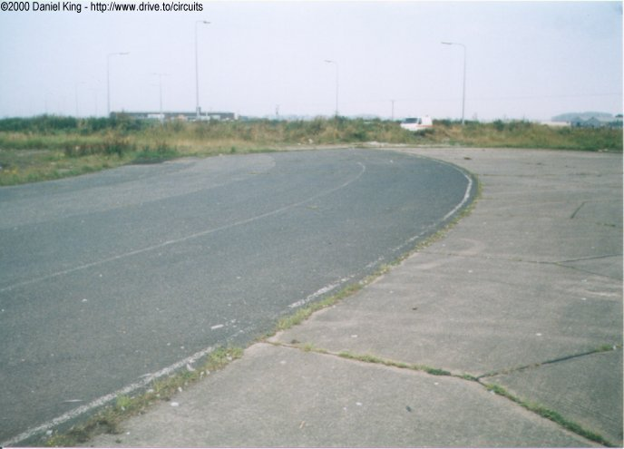
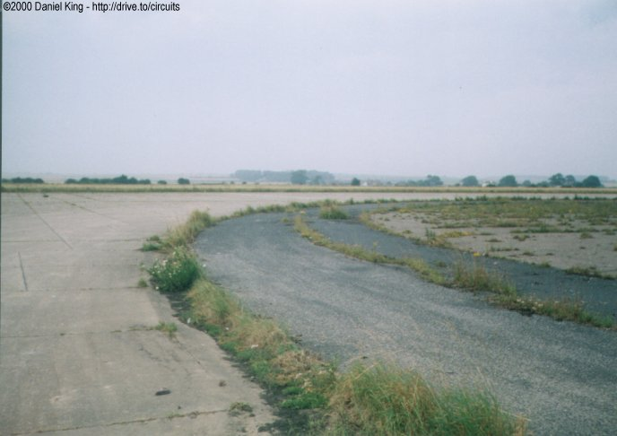
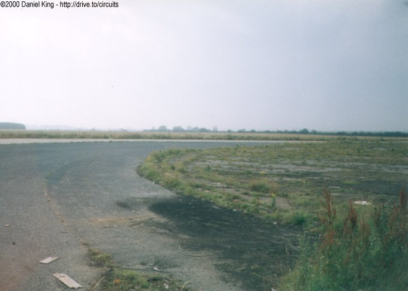
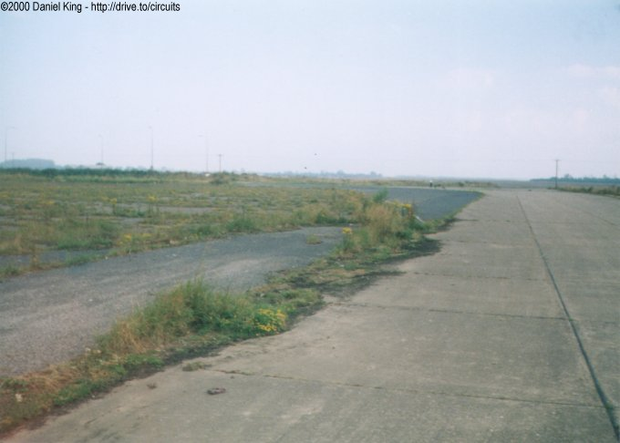

Numbers indicate where the pictures were taken. Click links above.
First Turn
|| Contents | 1 | 2 | 3 | 4 | 5 | 6 | Home ||
Numbers indicate where the pictures were taken. Click links
above.
| The first corner is located at the very end of the main road through the Carnaby industrial estate. Although the first part of the corner has been covered by the roundabout which was built at the end of the road, approximately 80% of the corner is still visible. The corner is banked and leads onto the old runway link road. Because of the banking, speeds through this corner must of been very fast coming off of the front straight. |



